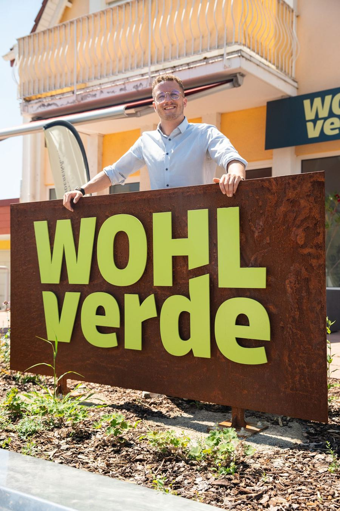
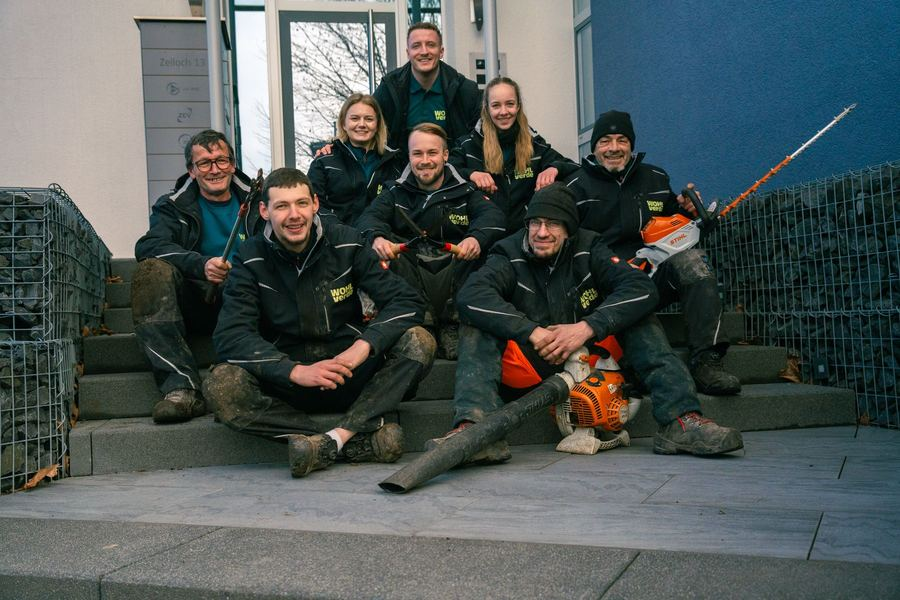
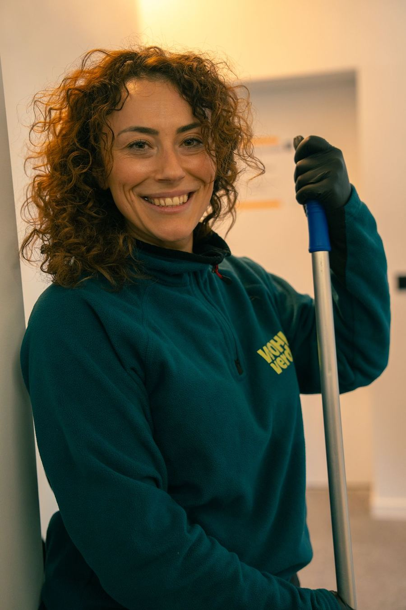
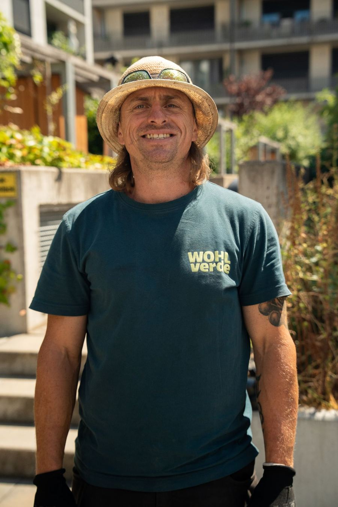
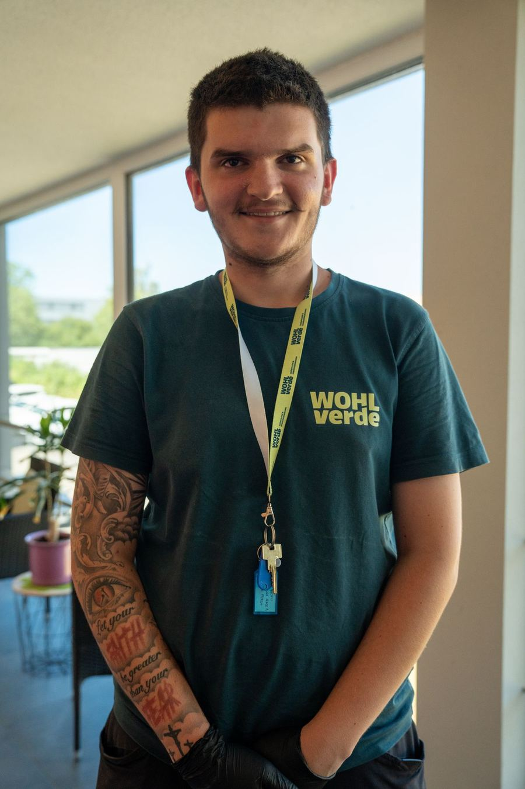
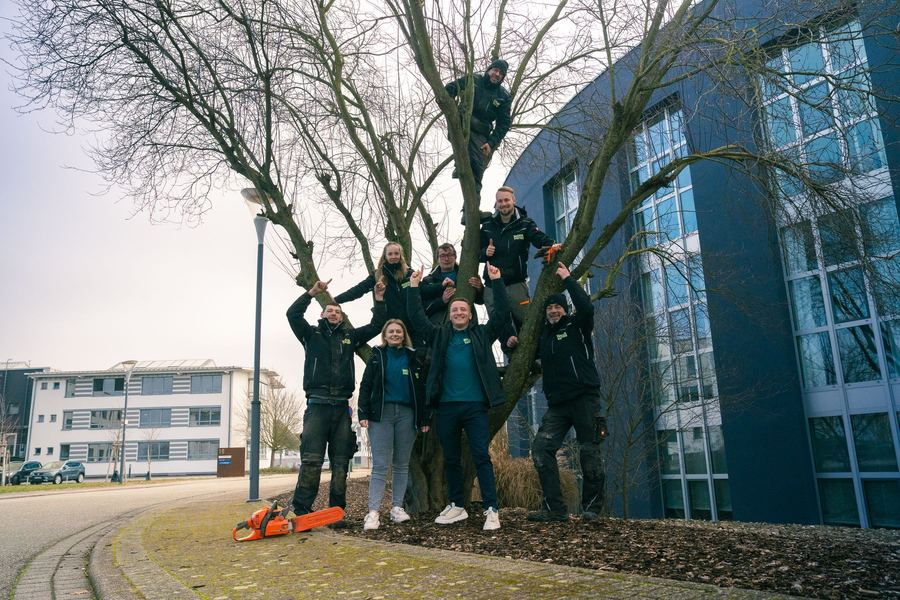

Jung, erfahren und mit Herzblut dabei.
Wir sind das Team aus Forst, das sich mit Leidenschaft um Objekte in der Region kümmert. Gegründet mit einer klaren Mission: den Wert von Immobilien durch kompetente Betreuung zu steigern.

Von H&G WOHL zu WOHLverde.
Gegründet im Oktober 2020, sind wir schnell gewachsen: Erst vertrauten uns Privathaushalte, bald auch namhafte Gewerbekunden und Industrieparks.
Mit jedem Auftrag haben wir unsere Kenntnisse und Fähigkeiten weiter ausgebaut. Heute sind wir ein komplett deutschsprachiges Team mit über 20 Kolleginnen und Kollegen. Unter dem neuen Namen WOHLverde machen wir genau so weiter wie bisher: gleiches Team, gleicher Service, gleicher Qualitätsanspruch.
Wir haben uns auf Gewerbe und Kommunen spezialisiert und kümmern uns vollumfänglich um das Wohl Ihrer Immobilie, in drei Kernbereichen: Grünpflege, Gebäudereinigung und Instandhaltung.

Ich habe die Firma WOHLverde im Oktober 2020 gegründet und bin unglaublich stolz, dieses Team, diese Arbeit und unsere Kunden zu vertreten. Am meisten Spaß macht mir unsere Teamkultur und das Ausbilden meines Teams.
Wofür wir stehen.
Werte stehen bei uns nicht nur an der Wand. Sie entscheiden, wie wir arbeiten, ausbilden und miteinander umgehen.
Wir sagen, was geht und was nicht. Klare Absprachen statt leerer Versprechen.
Wir behandeln Ihr Objekt wie unser persönliches Projekt.
Sauberkeit macht uns Freude. Wir arbeiten mit höchster Genauigkeit.
Regelmäßige Schulungen und Weiterbildungen für das ganze Team.
Unser Service passt sich Ihrem Objekt an, nicht umgekehrt.
Klare Kommunikation: Jeder im Team spricht Ihre Sprache.
Moderne Arbeitsweisen, die fortschrittlich und umweltfreundlich sind.
Wir machen diesen Job, weil er uns Spaß macht. Das sieht man.
Die Menschen hinter WOHLverde.
Draußen auf den Flächen, drinnen in den Gebäuden und im Büro in Forst: Bei uns arbeiten Profis, die Verantwortung übernehmen.




Mach mit. Wir bilden dich aus.
Du suchst einen Job mit Abwechslung, festem Team und echten Perspektiven? Auch handwerklich begabte Quereinsteiger sind bei uns willkommen, denn wir bieten Fortbildungen und Schulungen für jeden Fachbereich.

Lernen wir uns kennen.
Erzählen Sie uns kurz, worum es geht. Wir melden uns in der Regel innerhalb eines Werktags und vereinbaren einen Vor-Ort-Termin.